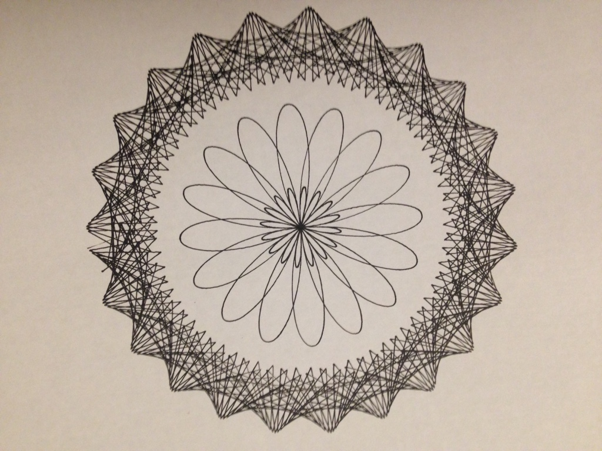
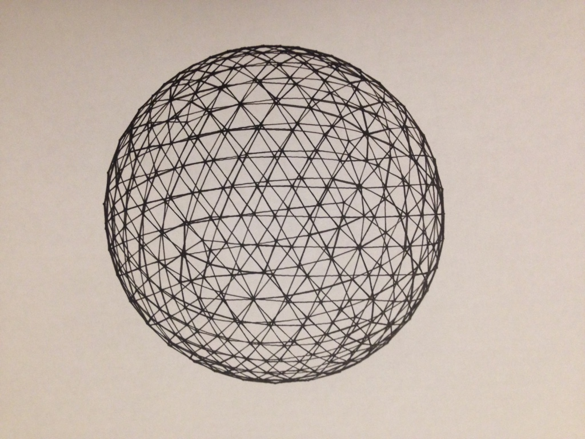
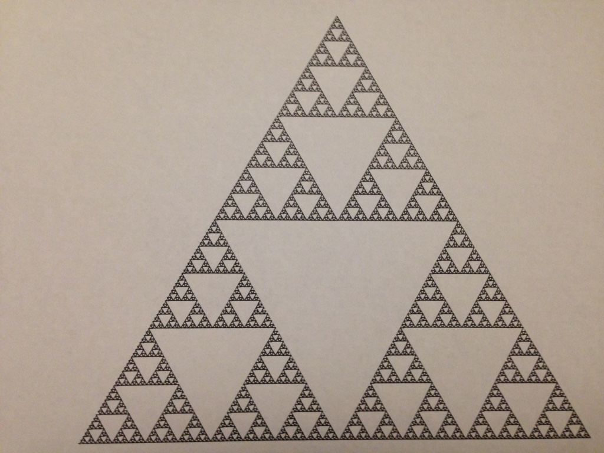

CNC machine
The Pen plotter which has been described here has now been modified to be a more stable CNC machine. The new setup has two rails for the Y axis using 20 by 60mm aluminium extrusions the X axis now runs along a 40 by 40 aluminium extrusion. The Z axis uses a lead screw. The machine is shown in the following image.

When I first had the idea that I wanted to build a CNC machine I thought wouldn't it be great if i could just take any image and find a way to automatically plot it on paper. Here are some images I found on the internet and the corresponding result after it had been put through an algorithm to find the boundaries of the image.
It can also do line drawings.
Moving on from this, the next step for me was to plot equations. Initially i looked towards equations that govern how a spirograph machine works.
-

Heres a short video of it being drawn.
I have also looked at plotting parametric equations that discribe surfaces.

I have looked at plotting geometric shapes.
-

I have looked at plotting fractal images such as the serspinski triangle and a snowflake .
-
